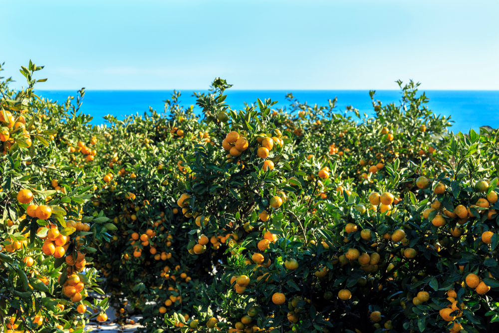
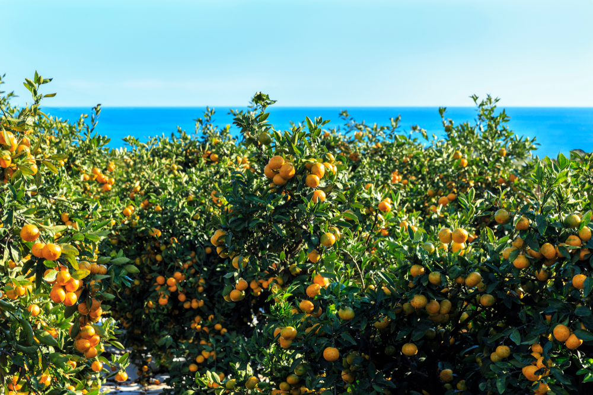

History
History of Tamna
Tamna is Jeju’s old name, meaning “island country.” The process of settlement of Tamna on Jeju Island is illustrated by Tamna’s settlement myth, which is known as Samseong shinhwa. To see archaeological evidence of the early settlement of Jeju, visit Samyang-dong Prehistoric Site, which has been designated Historic Site No.416. The site contains the earliest known and largest residential remains in Jeju, dating back to the third century B.C. during the proto-Three Kingdoms Period. This site shows society during the period of Tamna formation (200 B.C. ~ 200 A.D.) Tamna is known to have been an active trading partner with Baekje, Goguryeo and Silla during the Three Kingdoms Period. Tamna also had diplomatic relations with the Dang Dynasty in China and Japan after Baekje was destroyed by an allied force of Silla and Dang. Tamna was historically known as the independent Kingdom of the Sea. It became subjected to the Goryeo Dynasty, and its name was changed to Jeju. meaning “a big province across the sea.

Korean War(1950)
mmediately after the North Korean invasion of South Korea, the South Korean military ordered the "preemptive apprehension" of suspected leftists nationwide. Thousands were detained on Jeju and then sorted into four groups, labeled A, B, C and D, based on the perceived security risks each posed. On August 30, 1950, a written order by a senior intelligence officer in the South Korean Navy instructed Jeju's police to "execute all those in groups C and D by firing squad no later than September 6.
Culture of Jeju Haenyeo
In Jeju Island, there is a community of women, some aged in their 80s, which goes diving 10m under the sea to gather shellfish, such as abalone or sea urchins for a living without the help of oxygen masks. With knowledge of the sea and marine life, the Jeju haenyeo (female divers) harvest for up to seven hours a day, 90 days of the year holding their breath for just one minute for every dive and making a unique verbal sound when resurfacing.
“When we go to the sea, we share the work and the danger. We harvest together, sort together, and sell together, because the sea itself is communal.”
- Lisa See The Island of Sea Women
 
